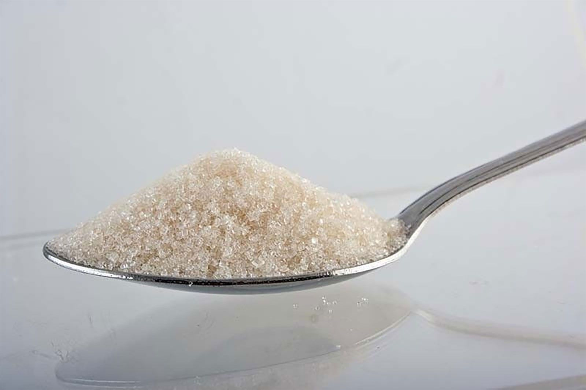

SM Prime opens the ₱7.7-billion SM Nuvali mall in Laguna
26 Nov 2026 · BusinessWorld
SM Prime opens SM Nuvali in Sta. Rosa on Friday 27 Nov: 229,000 sq.m., designed by Arquitectonica, with a one-hectare indoor garden under an ETFE skylight. It has dining areas opening onto outdoor promenades and an SM Game Park built into the food hall. Elevated walkways link it to Park Inn by Radisson SM Nuvali and SMX Trade Hall SM Nuvali. NV Tower, a Grade A office building going for PEZA accreditation, is under construction next door with retail on its lower floors.
Operator read: a mall with a hotel, events hall and offices attached brings weekday lunch and event catering demand on top of the weekend family crowd. That's the profile to plan for if you're looking at a site or a commissary route near Nuvali. Ayala's Nuvali dining strip is next door, so rents and foot traffic there are worth watching too.
Open BusinessWorld

SRA opens voluntary purchase of local raw sugar for crop year 2026–2027
25 Nov 2026 · Philstar
Under Sugar Order 2, farmers, millers, refiners, manufacturers, beverage makers and traders can buy locally produced raw sugar. Buyers get priority in any future sugar import or export allocation, and only sugar bought under the order would qualify for a US export program. The purchased sugar is held as “C” or reserve sugar for up to 90 days. The allocation is split 75% to farmers and 25% to millers. SRA says the aim is to keep farmgate prices reasonable while taming retail prices.
Operator read: big buyers like beverage makers and manufacturers are being rewarded for buying local now with first rights on imports later. That tends to keep sugar prices steady. If you buy sugar in volume for drinks or desserts, ask your supplier whether they're joining the program, because that tells you who will have stock if imports open.
Open Philstar